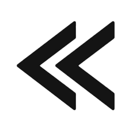

Pendant la lecture individuelle d’une histoire illustrée, l’enseignante se place face à Victor pour lire l’histoire avec lui. Elle lui pointe quelques images et tente d’attirer son attention. Cependant, Victor fixe le doigt et ne semble pas comprendre l’initiative de l’enseignante.
